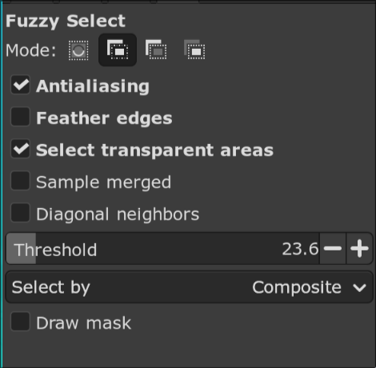
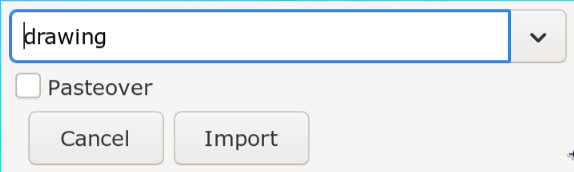

Gimp
In Gimp, we have mostly two purposes for fansubbing: make quick selection to convert it to clip or shape and clean up the sign to image trace it.
Selection
Selection highlights a specific portion of the image. The selected region is indicated by a marching ant lines.
If you want to delete a selection that has already been made, you can click
anywhere outside the selected region. You can also go to Select -> None to
delete the selection.
Every gimp selection tool has options and modes. Let's learn about modes first:

| Number | Meaning |
|---|---|
| 1 | Replace current selection i.e. everytime you draw a selection, the previous one disappers |
| 2 | Add to current selection i.e. when you draw a selection, it will be appended to previous selection |
| 3 | Subtract from current selection i.e. when you draw a selection, this new selection will be removed from the previous existing selection |
| 4 | Intersect with current selection i.e. when you draw a selection, only the region that overlaps with existing selection and new selelction will remain as selection |
Operations on selection
When you have selection, there are few things you can do to it that will be useful to us.
Remove Holes
When you make selection and there is hole in it, (hole meaning there is an unselected region within the selection), it is sometimes useful to remove it.
In order to remove it, right click and go to Select -> Remove Holes.
Grow
All the tools I explain below make very tight selections. If you just use it as it is, it will create gaps. Just increasing this selection by a few pixels will close that gap.
In order to change selection size, right click and go to Select -> Grow. In
the GUI, enter the number of pixels you want to grow the selection size by.
Positive value will increase the selection and negative value will decrease the
selection.
To Path
Selection is well just selection, it's selecting a region in the image. Like I said in the beginning, the goal of selection is to convert it to clip or shape. In order to do that we need to first convert it to path.
In order to convert selection to path, right click and go to Select -> To
Path. You won't see any change in the image. However, if you go to the panels
of layers, you can see all the paths too.
Rectangle Select
One of the simplest selection tool. Select the tool, click anywhere in the image and drag to create a rectangular region. Until you press Enter, the selection has not been made. You can change the size, length, width of the rectangle using the controls you will see when you hover over it. You can even drag it to new location. Finally, when you are ready, press Enter to finalize the selection.
Press Shift after you make the first click while using this tool to generate a square instead of rectangle. If you press Ctrl after the first click, the point of your first click becomes center of the rectangle.
Ellipse Select
Just like rectangle selection tool, click anywhere in the image and drag to create an elliptical region. In the default UI, the rectangle and ellipse tool are overlapped. Right click the rectangle tool and you can now select the ellipse tool.
Press +=shift++ after you make the first click while using this tool to generate a circle instead of ellipse. If you press Ctrl after the first click, the point of your first click becomes center of the ellipse.
Fuzzy Select
Probably my favorite selection tool. When you have this enabled, and you click on a point in image, it will select adjacent region of similar color.

One of the options of this tool is called Threshold.
Threshold refers to the maximum color difference between the reference pixel and adjacent pixels to select. If you have high threshold, Gimp will be less strict about which colors to select and vice versa.
Normally, you would just click at a pixel and Gimp will select the surrounding region of similar color but if you click and drag the cursor down, it will automatically increase the threshold on the fly and allow you to select bigger region than you could with single click. Dragging it up will decrease the threshold.
Select by Color
Another one of my frequently used tool. This is also overlapped with Fuzzy
Selct tool, so if you right click that tool, Select by Color tool can be
enabled. This is similar to Fuzzy Select tool but instead of choosing similar
color in adjacent region, it will select all the pixels in the image that have
similar colors. This also has Threshold option just like Fuzzy Select tool.
Normally this would not be that useful, because if you use this in a sign, it will also select the pixels outside the sign but if you remove the region outside the sign first (not crop), then this suddenly becomes extremely useful.
Quick Mask
Finally, we move to a bit more advanced way of making even a complex selection really fast.
- Enable
Quick Masktool by pressing Shift+q or go toSelect -> Toggle Quick Mask. You whole image will be overlayed with a red tint where the red tine represents the unselected region. If you already had selection prior to activating quick mask, that selected portion won't have red tint. - The goal of quick mask is to use paint brush to paint the region that you want to select with white color and the region that you don't want to select with black color.
- So enable the paintbrush tool by pressing p key. Reset the foreground and background color pressing the small square icon below the color square. Remember you can switch between the foreground and background color by pressing x. So if you are painting white but you accidentally overshoot and painted the region that should not be selected white, press x, paint the region black to unselect, press x again and continue your selection.
- Your left square bracket makes brush size smaller and right square bracket makes brush size bigger. Also don't feather your brush and set your brush hardness to 100.
- When you are done painting, press Shift+q again and the region will be selected. Sometimes the UI doesn't update and show the marching ant lines but just I click on the image layer and it should work.
- If you are unsatisfied with your current selection, you can activate quick mask again and your progress will not be lost. You can continue from where you left off last time.
Here's a rough example:
Now here's a bit more realistic example of how you'd use it in a sign:
svgtoass
Converting Path to SVG
We learned above how to convert the selection to path. Now we learn how to convert that path to svg and then convert that svg to clip or shape.
- Right click in the path, click on
Export Path. - A file picker will open. Navigate to the folder you want to save SVG to.
- Write the name of the SVG and click on
Savebutton.
Convert SVG to ASS
Config
Let's set up the config of the script. This is a one time set up.
- First download and install python. When you
install python, make sure you tick
Add to system pathcheckbox. - Open the command prompt or Windows Terminal and install inkex using the
command
pip install inkex. - Download the python file and save it to some location.
- Download
svg2assscript from Dependency Control. - Open the config of
svg2assby going toAutomation -> svg2ass -> Config. A file picker will open. Navigate to the python file you downloaded above, select it and clickOpenbutton.
Run
Above steps is a one time only. Once you have set up the config, whenever you you want to convert an svg to ass, follow these steps:
- Run the script using
Automation -> svg2ass -> Run. The GUI will open  - Select
drawing,cliporiclipin the dropdown depending on what you want. - Click on
Importbutton.
TODO: Add example
Resynthesizer
TODO